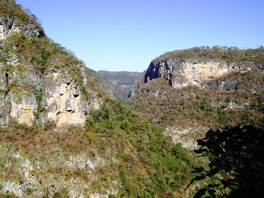
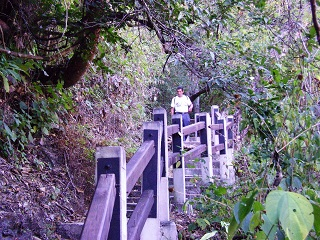
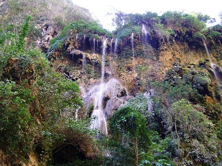
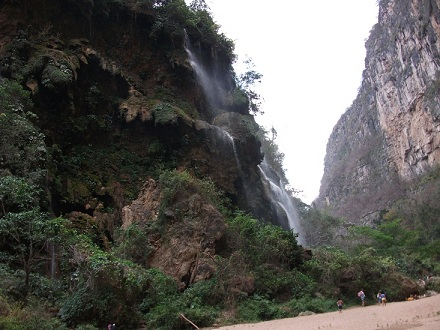
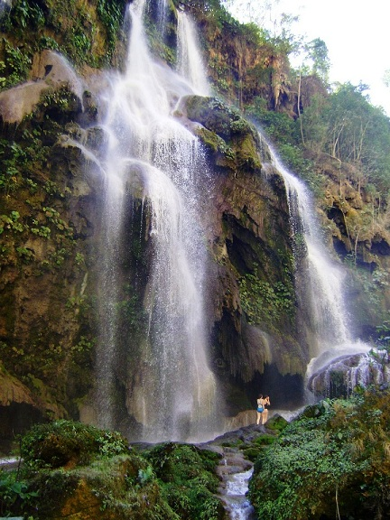

Este lugar es considerado como parque natural del estado de Chiapas. El nombre obedece a que el río La Venta, cuyas aguas forman la cascada, se precipitan en tenues y altas cortinas de 75 metros de altura, creando un verdadero aguacero. Además cuenta con una serie de cuevas, de las que se destaca la cueva El Encanto con un río subterráneo y una caída de agua que desciende. Su volumen de precipitación es variable, de acuerdo con la temporada del año. De mayo a diciembre, cuando las lluvias son constantes, se forma una cascada de grandes dimensiones cuya velocidad promedio alcanza los 15 metros por segundo.
Por el exceso de humedad y por el calor constante, la temperatura promedio de la región oscila entre los 25° C y 32° C al año, razón por la cual existe una amplia variedad de flora, que en su mayoría es selva tropical de duración indefinida o perenne, así como vegetación secundaria como musgos y helechos.
En cuanto a la fauna existen especies muy variadas entre ellas están el tejón, el armadillo, el mono araña, la ardilla, el tepezcuintle, el mico de noche, el mapache, el tlacuache, el gato montés, distintos reptiles, aves y una gran diversidad de insectos.
La cascada se ubica al lado poniente de la ciudad capital Tuxtla Gutiérrez a una distancia de 61 km, pasando la cabecera municipal de Ocozocoautla.
Salir de Tuxtla Gutiérrez por la carretera federal No. 190 (lado poniente). A 16 km de la ciudad de Ocozocoautla se encuentra el desvío de 3 km de terracería que conduce a la cascada. La distancia es de aproximadamente 61 km, por lo que el recorrido aproximado será de 50 minutos.
Esta área es idónea para la práctica del turismo de aventura, senderismo, observación de flora y fauna, y el ecoturismo; así como ejercitar el excursionismo, campismo, alpinismo, incluso ciclismo de montaña.
Además de conocer la naturaleza, también podrás poner a prueba tu condición física, debido a que existen alrededor de 900 escalones por los cuales deberás ascender para apreciar la cascada de donde inicia la caída.





posicione el mouse sobre las imágenes